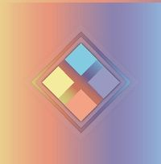
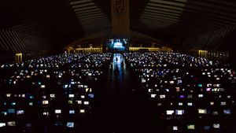
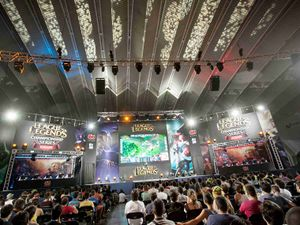
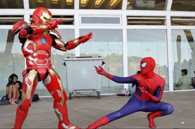
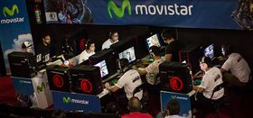

TLPTenerife
 De: La Frikipedia, la enciclopedia extremadamente seria.
De: La Frikipedia, la enciclopedia extremadamente seria.
 Logo de la TLP Gran Canaria
- TLPTenerife es un evento de ambito tecnológico
realizado en Las Palmas de Gran Canaria organizado por los ratas de Inova7 para sacarnos los horos y dejarnos pobres en el WoW, el LoL, en SC2, el CS:GO (o donde te dejes la pasta) durante todo el mes de julio. Es archiconocida a nivel mundial con el respetado título de "La versión Hacendado de la Dreamhack".
«TELEPEROS,¿CUAL ES VUESTRO OFICIO?
¡¡¡AU, AU, AU!!!»
~ Teleperos entonando su himno nacional
«¡¡¡HUGO, ES EL JEFE DE LA NOCHE!!!»
~ Teleperos de parranda
| TLPTenerife
|
| Localización: |
Recinto ferial de Las Palmas de Gran Canaria
|
| Fecha: |
Al mismo tiempo que la DH Valencia, por joder.
|
| Reclamos principales: |
Encontrar a Alan, gastarse la pasta y perder vida social.
|
| Organizado por: |
Inova y los 7 ladrones.
|
¿Qué es TLPTenerife?
- Las siglas TLP significan "Tenerife Lan Party". Puede que te estés preguntando por que cojones el evento se llama TLPTenerife entonces (TenerifeLANPartyTenerife es algo repetitivo).
Telepito también se lo preguntaba y ahora está muerto. Hay varias hipótesis: Una de ellas es que, según la tiranía de Inova7, así quedaba más chupiswag para hacer publicidad del evento. Otros opinan que los niveles de #hype que genera el evento a los fans son tan altos que se produce una plegación del espacio-tiempo, formando durante una semana un Tenerife alternativo donde los otakus, mangakas, fanmakers, frikis, cosplayers y demás subclases de nerds conviven en paz y armonía durante esa semana, en un plano ideal donde se alimentan de Doritos, Instarramen del Carefour, Monster, y balian a la luz de la hogera creada con la pasta que se han quemado en las tiendas de la Summercom. Si preguntais mi opinión, la culpa la tiene Google y la psicología troll (buscad TLP en Google).
La TLP está dividida en varias categorías: Tenerife LAN party, Summercom, TLP eSports, TLP Inova y TLP Expo. A continuación pasaremos a exponer cada una de ellas.
Categorías de TLPTenerife
Tenerife LAN Party
- Con una conexión en LAN de 30GB de velocidad para +2000 personas disponible 24h durante 6 días, la Tenerife LAN Party se ha ganado sin duda alguna el primer puesto en España como generador de
orgasmos #hype pobreza entre la sociedad friki de Canarias, además de ser el único lugar del mundo donde se le llama “Ojo de Mordor” a un falo cubico formado por latas de Monster, Web! y RedBull.
La Tenerife LAN Party es una sociedad aparte dentro de la sociedad en sí, dividida en clanes respetados que podrían ser bien un reflejo de la sociedad, entre ellos: los “Together Alone”, grupo de gente sin hamijos que se asocian para no sentirse solos (e intentar perder la virginidad si cuela); “Siete tetas y media” (Nadie sabe por qué, posiblemente ni ellos); los “Renegados”, que vendrían a ser los que están dando por culo montar una fiesta en el trabajo todos los días; los “Solomillos”, grupo de veganos pacifistas; o el “Staff”, que no son un grupo pero si te ries de ellos te violan y te matan y te echan del evento pero todo el mundo les quiere y les tratan como uno más por su siempre constante y eficaz ayuda.
Para poder entrar dentro de la sociedad de la TLPTenerife debes superar cada año el temido rito de “La compra de entradas”, que es algo así como un Hunger Games pero que dura 5 milisegundos y que mide la resistencia del boton “F5” que tienes en tu casa. Basicamente consiste en pegarte de hostias (virtualmente) con los mas de 8 millones de personas que solicitan una de las 1800 entradas y si la suerte, Chuck Norris y el Monstruo Espagueti Volador están de tu parte, lograr el milagro de hacerte con un tiket. Este reto es especialmente arduo porque las entradas tardan en agotarse menos que la virginidad de JB en un congreso de belibers.
Existe, no obstante, una forma de superar este rito: vender todos tus organos para conseguir 120€ que quemarás ante el señor Hugo jefaso de la noche y de Inova7, que muy cordialmente te asegurará una entrada VIP, con las penosas ventajas de: llevar tu pc un día antes (pero sin internet so Nerd), no hacer cola (En realidad si la haces solo que es una cola VIP, ya sabes, con mas flow) o un maravilloso kit compuesto por un molinillo de viento de colores que no funciona, una alfombrilla y camisa con más publicidad que una pagina porno y una palmadita en la espalda por haberte quemado los horos en semejante estafa para contribuir a la causa del frikismo.
 Tanto friki junto no puede acabar bien, y eso queda claro en las competiciones espontáneas
- Cosas que se pueden hacer en la LAN:
- Primer día:
- Hacer una cola de 10 horas bajo un sol rajapiedras a la encantadora temperatura ambiente de 30º.
- Llegar exausto al interior del evento y conectar tu equipo a la red LAN.
- Empezar a disfrutar de la increible conexión y velocidad de 30MB ofrecidos por Innova7.
- Gritar de frustración y citar a la madre de Innova7 porque se te ha ido la conexión en medio de tu ranked (estabas en promo).
- Caminar impotente en circulos esperando a que se arregle el internete.
- Aprender la lección "No jueges ranked si es el primer dia de TLP"
- Volver a jugar al lol porque ya se ha arreglado el internete (pero ahora juegas normales porque estás acojonado por si se peta el internete).
 Una cutricompetición de League of Legends de bajo nivel en la TLP.
- Segundo día - Quinto día:
- Viciarte y bajar p0rn.
- Dar una vuelta por la Summercom por si estás cansado de viciarte (rly m8? U mad r smting? u suks m8).
- Gastarte la pasta en los puestos anime de la Summercom.
- Si eres cosplayer, lucir tu cosplay, duramente trabajado durante todo un año.
- Llorar de impotencia y frustración viendo a los cosplayers pro y/o con mas pasta que tu y sus cosplays que humillan al tuyo.
- Sexto día:
- Aferrarte a internet de manera desesperada.
- Llorar cuando cortan internet, caer en una depresión y aferrarte gritando al ruter porque no quieres abandonarlo.
- Ser apaleado fuera del local por el Staff.
- Volver a la Summercom a rastras a hincharte de nostalgia y dejarte el resto del dinero del mes en los puestos de venta.
Summercom
 Procosplayers en danza de apareamiento
- La Summercom es un salón del manga. Todo el mundo lo llama "Salón del manga". Hasta los organizadores de la "Summercom" lo llaman "Salón del Manga". No engañan a nadie. Por tanto, a partir de ahora, nos referiremos a la Sumercom como "Salon del Manga". Por si te lo estabas preguntando, sí, he repetido 5 veces "Salon del manga" en este parrafo (ahora 6, HA!). Lo siento, pero la prosa de uno no da para más. Volviendo al tema:
- El salón del manga(7) de la TLPTenerife es, pues eso, un salón del manga(8). Hay puestecitos que venden mierdecitas, souvenirs, trozos de gatos descuartizados para decorar tu cuerpo, chaquetitas, figuritas, y demases frikadas que te puedes encontrar en un salón del manga (8) normal y corriente. En definitiva, es un salón del manga (9) como cualquier otro
solo que caro como spm joe, como se nota que la industria friki nos hemos puesto en alza y somos tacaños hostaiputa. En el salon del manga (10) también es el espacio donde los cosplayers se reunen a posar. Igual que los pavos reales se reproducen según la belleza de su plumaje, los cosplayers canarios se juegan su virginidad su ego en este evento: solo los cosplays mas currados triunfan, y son tratados como dioses, acosados a fotos, mientras que los demas quedan relegados a un segudo plano, también conocido como “mira el pringao ese disfrazado de pokemon equisdé”. (P.D: Ponerse orejitas de gato/perro desmembrado no es hacer cosplay. Es kawaii, pero NO ES UN JODIDO COSPLAY. Me veo obligado a recalcarlo porque si no los cosplayfans se ponen como perros en celo y me descuartizan por posser).
- En el salón del manga (11) también se reunen los jugadores de juegos de mesa y juegos de cartas, para competir o bien en minijuegos casuals o para
liarse a hostias en el magic, el pokemon y el Warhammer ahi no hay piedad quein muera pues murió por pussy y n00b y punto competir en honorables y gloriosas competiciones de juegos algo más complicados y/o elitistas.
Gracias a Dios, hay entradas tipo "Invitado", que permiten, por el módico precio de 10~15€ aprox. de visitar el salón del manga (12) si no has tenido suerte de conseguir una de las entradas para la LAN o, simplemente, solamente te interesa el salón del manga (13)y la zona LAN te da exactamente igual , aunque si es así eres un poco jodidamente pussy mierdas sin valor y un ignorante comemocos . En el salón del manga (14) también se puede disfrutar de los acosadores sin dignidad encantadores “FREE HUG”, personas (generalmente veistidas de forma ridícula) encargadas de abrazar a quien lo necesite (¿EN SERIO WTF?) aunque en general da la impresión de que son ellos quien necesitan el abrazo, ya que todo el mundo da un rodeo al verlos para no pasar a su lado. Tambien puedes encontrar los impresionantemente tristes partidos ofrecidos en el escenario de TLPeSports.
TLP eSports
La mayor competición de eSports de Canarias. Porque no hay otra.
- TLPeSports no es un área de la TLPTenerife en sí (si dejamos de lado el jodido escenario gigante que ocupa la mitad del puñetero salón del manga (ya he perdido la cuenta de cuantas veces he dicho salón del manga. Sí, lo estaba contando)), sino que engloba todos los torneos de videojuegos oficiales y no oficiales realizados en el evento. Es mundialmente reconocida por sus premios ñoñas y por ser centro deinteres para ver violaciones, ya que invitan a equipos semiprofesionales al evento para que puedan partir la cara a los equipos locales y así sentirse satisfechos.
TLPeSports destaca principalmente por su evento Island of Legends (adivina de que juego es) , donde los equipos locales de League of Legends luchan de forma despiadada para conseguír un puesto en las finales eliminatorias, a las que han sido invitados equipos profesionales que violarán harán frente a los aspirantes locales para alzarse con un gran premio de mierda.
No obstante, también son necesarios destacar sus numerosos e irrelevantes torneos de Starcraft2, Pkmn, SMBB, Minecraft creativo, Street Fighter y demás, que destacan por su intensa competencia de mierda a pesar del nivel local.
TLP Innova
*Cabe destacar que nadie ha ido nunca a TLP Innova, por lo que no se sabe de que va en realidad.
Sentimos comunicar que no hay datos de esta entrada.
«ke asen mierdas»
~ LoulogioPi & Bolli cuando les dijeron que tenían que dar una charla en TLP Innova
TLP Expo
- La TLP Expo es una exposición de figuritas, posters y consolas antiguas. En serio, quiero definirlo más, pero ahí se queda.
- (El fundador de Atari cuenta como "figurita antigua")
TLP OPEN CUP
 Modelos posando y fingiendo como que saben jugar
- TLP Open Cup es
(o eran porque los ratas de Innova7 ya no los organizan sino a nivel local) una serie de torneos de e-Sports a nivel nacional, que permite a los equipos ganadores de cada torneo ganador asegurarse una entrada en la Zona LAN del evento.
- Por lo general, equipos locales juegan para ganar una entrada en la TLP y poder participar en TLPeSports para tener el honor de
ser masacrados y violados poder hacer frente a jugadores o equipos profesionales invitados al torneo correspondiente de cada categoría. Anteriormente, el evento se realizaba en Madrid, Barcelona, Tenerife y Gran Canaria, pero por lo visto daba pereza organizarle el evento a los godos era complicado mantener la estructura del evento fuera de Canarias, por lo que al final el torneo ha quedado relegado a categoría local aunque tampoco es que le importe a nadie.
- No obstante, cada Open Cup sigue siendo un foco de interés, ya que los intensos partidos
y principalmente los regalos que dan al publico por ir son un fuerte reclamo para que la gente sin amigos y nada mejor que hacer con su vida no dude ni un instante en asistir.
TLP WORLD
- TLPWORLD es un
plagio del salón del manga pero en invierno. Es decir, otro foco de pose para cosplayers, un centro de quema de dinero en figuritas y mangas, unido a una TLP OPEN CUP todo esto celebrado en el quinto coño de Tenerife Puerto de la Cruz (Gran Canaria). El evento contaba, entre otras cosas, con una pantalla de m*#@*a para retransmitir los partidos de e-Sports, un microespacio para lo que es un salón del manga y baños limpios (que aunque parezca coña es un plus importante, APRENDE RECINTO FERIAL), pero hey, la entrada es gratis. YEP, ITS FREE.
Frikipedia 2005-2016, Licencia
GFDL 1.2 - Extraído por FrikiLeaks